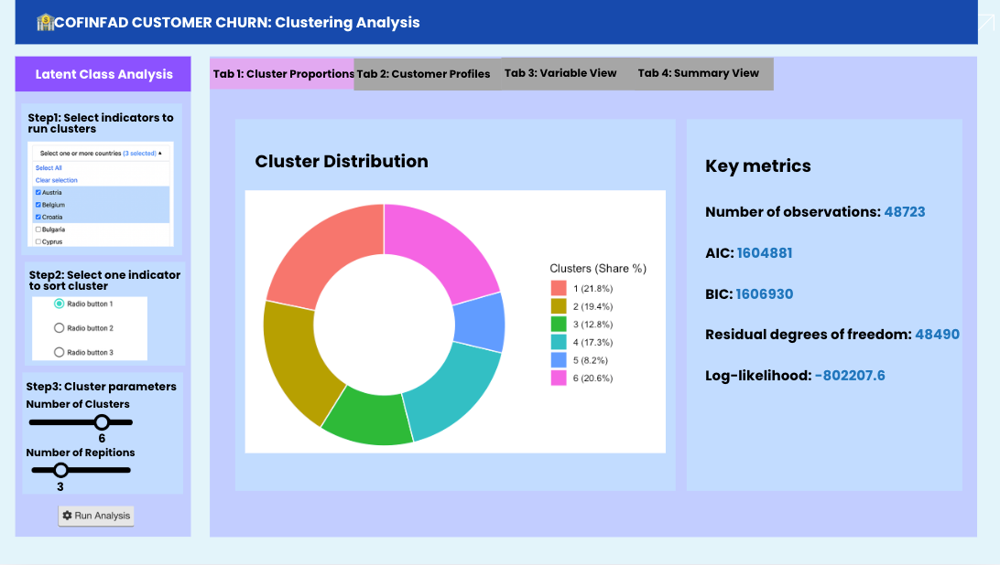
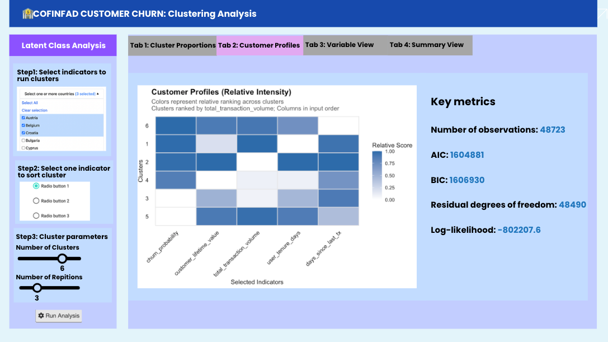
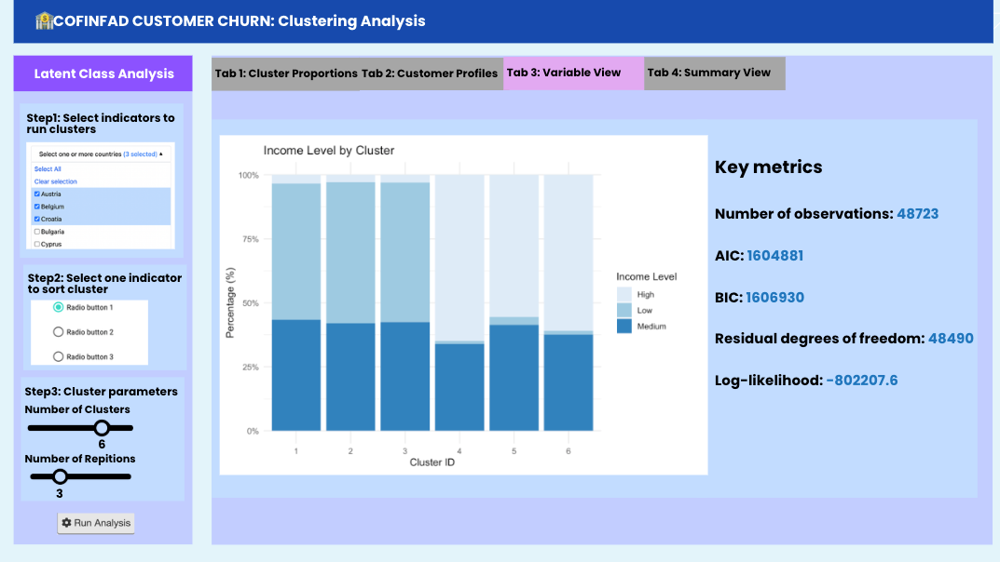
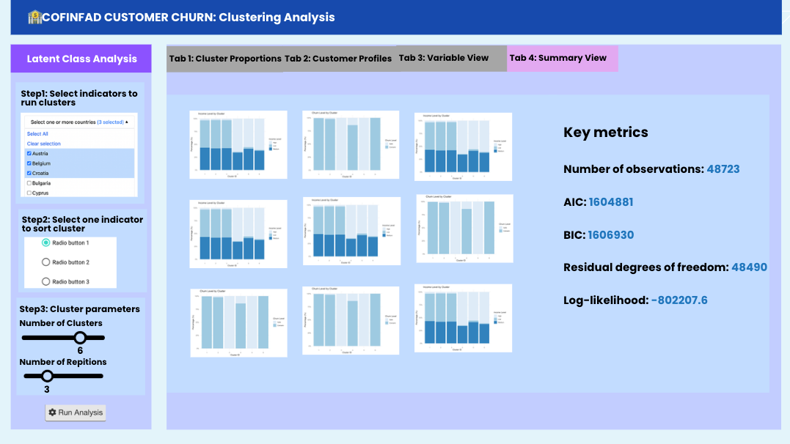

proposal_data_solution.qmd
Our Solution
Leveraging a suite of R packages, this project will develop a prescriptive decision support system to transform high-frequency fintech data into actionable retention strategies. Following initial Exploratory Data Analysis (EDA) and Confirmatory Data Analysis (CDA), the framework will integrate Predictive Modeling with Latent Class Analysis (LCA) to achieve the following:
Risk Diagnosis: The system uses SHAP Waterfall Charts to explain the exact drivers behind each risk score. For instance, if a high-value customer’s churn probability spikes, the system clarifies whether the cause is a “drop in satisfaction scores” or a “reduction in login frequency,” allowing for a highly personalized response.
Dynamic Strategy Simulation: Through the “What-If” Simulator, teams can test marketing ideas before spending a single dollar. By adjusting interactive sliders, such as increasing a cashback offer by 5%, users can see in real-time how much that specific intervention reduces the predicted churn rate. This eliminates guesswork and ensures marketing budgets are spent where they have the most impact.
Tailored Segment Intervention: By combining LCA Clustering, we divide 48,000+ users into personal groups. This allows us to act differently for different groups. For example, to reach out to high value customers who show early signs of churn, or personalize product recommendations for users who currently only use basic transfer features, to increase their overall stickiness.
The Data
The project will utilize the COFINFAD (Colombian Fintech Financial Analytics) dataset, capturing the digital banking lifecycle of a diverse Latin American user base throughout 2023. Extensive feature engineering will be performed to condense the raw variables into an optimized set of predictors for clustering and modeling:
- Customer Records: The primary dataset contains 48,723 individual customer profiles.
- Transaction Logs: Behavioral metrics are derived from a granular pool of 3,159,157 individual transactions.
- Key Dimensions: The data is structured across four pillars: Demographics (age, income, education), Transactional Patterns (velocity, volume, recency), Product Adoption (savings, insurance, investment), and Sentiment Metrics (NPS and 6-point satisfaction scales).
Methodology and Analytical Approach
Clustering Analysis
Model Selection
We used Latent Class Analysis (LCA) to group customers into defined number of distinct archetypes, allowing users to select their interested indicators for clustering. LCA is chosen because it is a probability-based method specifically designed for categorical data. While traditional methods like K-Means rely on physical distance between numerical points, LCA identifies hidden segments based on the likelihood of shared behavioral and demographic patterns.
Performance Evaluation
To ensure the statistical validity of the model, we assess key metrics AIC, BIC, and Entropy.
AIC & BIC (Information Criteria): These metrics evaluate the balance between model fit and complexity. Lower values generally indicate a more optimal model that explains the data well without overfitting.
Entropy: This measures classification precision. It indicates how distinctly the model separates individuals into clusters. Values range from 0 to 1, where higher score represents high certainty and minimal overlap between groups.
Profile Visualization
To make the clusters easy to understand, we translated numerical probabilities into visual profiles:
- Market Share: A donut chart was plotted to show the size of each segment, helping us prioritize which groups deserve the most resources.
- Intensity Heatmap: It provides a visual comparison of how each cluster performs across key metrics.
- Segment Composition Bar Chart: The stacked bar chart is used to reveal the internal distribution of specific variables.
Strategic Intervention
Finally, we mapped each cluster to certain business action, for example:
- Retention: We can identify High-Value users with a High-Risk churn status for immediate outreach.
- Growth: Finding Low-Holdings users with high satisfaction to target for product cross-selling.
Data Visualisation Methods
Clustering Analysis
Configuration View
This interactive interface empowers users to customize their Latent Class Analysis (LCA). You can select specific behavioral indicators, define the number of clusters and repetitions, and sort the results by key metrics to uncover clear, actionable patterns.
Visualization Views
Visualization views including 4 tabs: Cluster Proportions, Customer Profiles, Variable View, Summary View.
- Cluster Proportions: A donut chart was plotted to show the market share of each segment, helping us understand which group has the dominant share and which group to prioritize for resources allocation.

- Customer Profiles: The Intensity Heatmap used in this tab provides a visual comparison of how each cluster performs across key metrics. We convert categorical labels into numerical ranks and calculate the mean “level” for each group. Because these raw averages often fall into narrow ranges, subtle differences can be difficult to see on a standard scale. We apply 0-1 scaling to magnify the relative performance and highlights the difference.

- Variable View & Summary View: These two tabs provide segment composition bar charts, which are used to reveal the internal distribution of variables, on an overall look and on a single variable look.


R Shiny Packages
poLCA: A specialized tool for Latent Class Analysis of polytomous outcome variables. It estimates latent class memberships and item response probabilities.dplyr: A cornerstone of the tidyverse designed for data manipulation. It provides a consistent set of verbs (such as mutate, filter, and recode) to solve data transformation issues.scales: A utility package that handles the mapping from data to aesthetic attributes, it support format axis labels and legends.ggplot2: A powerful system for creating declarative graphics that allows you to build complex plots.